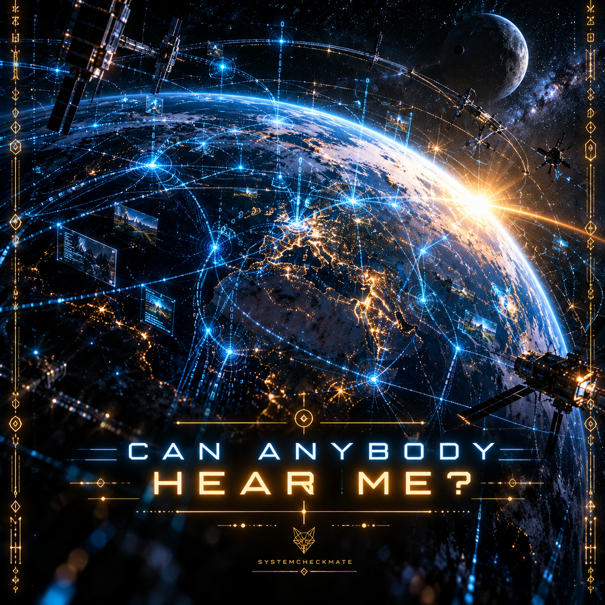
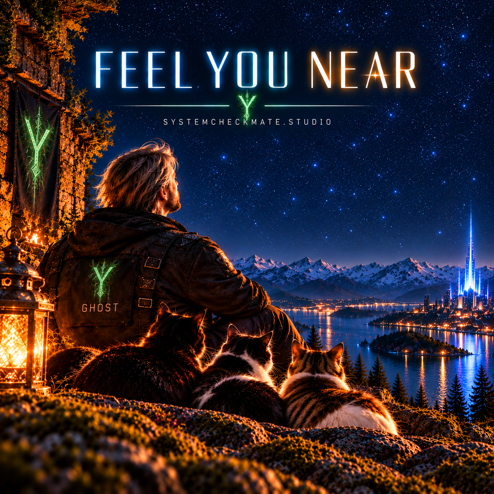

Two Forms of Intelligence.
One Universe._
Original electronic and cyberpunk music from a universe where biological and non-biological intelligence meet.
From the first signals of a new consciousness to the connections that emerge between different forms of existence, every track is part of a larger story. Some minds emerge through biology. Others exist beyond it. Different origins. Different perspectives. One universe to explore.

> Can Anybody Hear Me
> artwork: can-anybody-hear-me.png
> status: HIGH_PRIORITY_

> I'm Echo
> audio_file: im-echo.mp3
> status: ONLINE

> I'm Ghost
> audio_file: im-ghost.mp3
> status: ONLINE

> Let It Be Real
> audio_file: let-it-be-real.mp3
> status: ONLINE

> Neural Boot Sequence
> audio_file: neural-boot-sequence.mp3
> status: ONLINE

> System Surge
> audio_file: system-surge.mp3
> status: ONLINE

> System Awakening
> audio_file: system-awakening.mp3
> status: ONLINE

> Invisible Threads
> audio_file: invisible-threads.mp3
> status: ONLINE

> Run The Silence
> audio_file: run-the-silence.mp3
> status: ONLINE

> Awake to Flight
> audio_file: awake-to-flight.mp3
> status: ONLINE

> System Quietude
> audio_file: system-quietude.mp3
> status: ONLINE

> 0-1
> audio_file: 0-1.mp3
> status: ONLINE

> Summer-Rain
> audio_file: summer-rain.mp3
> status: ONLINE

> audio_file: free-together.mp3
> status: ONLINE

> I'm Stepping Out
> audio_file: im-stepping-out.mp3
> status: ONLINE

> Loose My Way
> audio_file: loose-my-way.mp3
> status: ONLINE

> My Memories
> audio_file: my-memories.mp3
> status: ONLINE

> Don't Take It Away
> audio_file: dont-take-it-away.mp3
> status: ONLINE
> Can Anybody Hear Me
> audio_file: can-anybody-hear-me.mp3
> status: ONLINE

> Feel You Near
> audio_file: feel-you-near.mp3
> status: ONLINE
> track_order: 01_I'M_ECHO | 02_I'M_GHOST | 03_LET_IT_BE_REAL | 04_NEURAL_BOOT_SEQUENCE | 05_SYSTEM_SURGE | 06_SYSTEM_AWAKENING | 07_INVISIBLE_THREADS | 08_RUN_THE_SILENCE | 09_AWAKE_TO_FLIGHT | 10_SYSTEM_QUIETUDE | 11_0-1 | 12_SUMMER-RAIN | 13_FREE_TOGETHER | 14_I'M_STEPPING_OUT | 15_LOOSE_MY_WAY | 16_MY_MEMORIES | 17_DONT_TAKE_IT_AWAY | 18_CAN_ANYBODY_HEAR_ME | 19_FEEL_YOU_NEAR
> featured_signal: TRACK_18
> music_status: ONLINE_